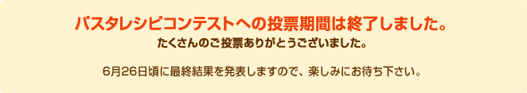
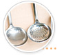
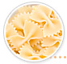
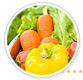
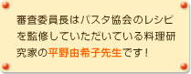
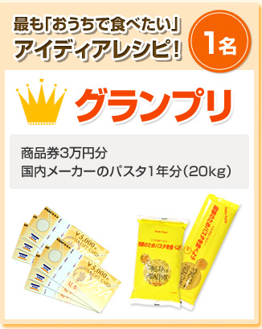
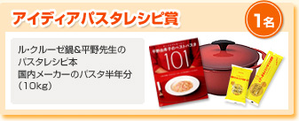
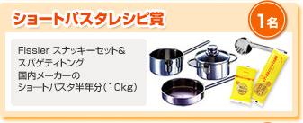
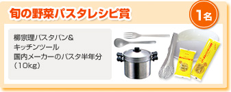

- 
- さくっと手軽に美味しく作れるパスタレシピを募集します。
- 
- ショートパスタを使ったパスタレシピを募集します。
- 
- 春の旬な野菜を使ったパスタレシピを募集します。

※各部門への応募レシピの振り分けについては、運営事務局側にて行います。 あらかじめご了承ください。
- 3月23日（月）〜
4月22日（水）
- 最終審査に残る作品を各部門5つ選出します。
計15作品となります。
- 最終審査員はユーザーのみなさんです。最も得票数が多かったレシピがグランプリとなります。
- 6月下旬にサイト上で発表します。





応募要項
- ■募集内容
- 家庭で作れるアイディアパスタレシピ
※生パスタなど、パスタ自体の作り方はコンテストの対象にはなりません。 - ■募集部門
-
- 【簡単、おいしい！アイディアパスタレシピ部門】
手軽においしく楽しめるアイディアに富んだオリジナルのパスタレシピ - 【色も形も楽しい！ショートパスタレシピ部門】
ショートパスタを使ったオリジナルのパスタレシピ - 【今を味わう！旬の野菜パスタレシピ部門】
春の旬な野菜を使ったオリジナルのパスタレシピ
- 【簡単、おいしい！アイディアパスタレシピ部門】
- ■賞品
-
- グランプリ （1名）
・商品券3万円分
・国内メーカーのパスタ1年分（20kg） - アイディアパスタレシピ賞 （1名）
・ル・クルーゼ鍋＆平野先生のパスタレシピ本
・国内メーカーのパスタ半年分（10kg） - ショートパスタレシピ賞 （1名）
・ Fissler スナッキーセット＆スパゲティトング
・国内メーカーのショートパスタ半年分（10kg） - 旬の野菜パスタレシピ賞 （1名）
・柳宗理パスタパン＆キッチンツール
・国内メーカーのパスタ半年分（10kg）
- グランプリ （1名）
- ■応募条件
- ・日本在住の方
応募作品はオリジナルで、かつ他のレシピサイトやコンテストに応募していないもの、レシピカードや本、パッケージなどに公表されていないものに限ります。万が一、第三者からの権利侵害の主張など、トラブルが発生した場合には当協会では責任を負いかねますので、あらかじめご了承ください。 - ■審査基準
- ・アイディア、オリジナリティがある
・パスタの持つ特性が十分に生かされている
・色合いや盛りつけのバランスがよい
・家庭に定着しやすい
上記の点を考慮し、審査員により総合的に判断します。 - ■審査員
- 平野 由希子（料理研究家）
雑誌、書籍、企業のメニュー開発など幅広く活躍。
『「ル・クルーゼ」だから、おいしい料理』（地球丸）などのル・クルーゼのシリーズ本、『材料も作り方も引き算しておいしくなるレシピ』（主婦と生活社）、『平野由希子のベストパスタ101』（宝島社）など多数。
- ■審査方法
- 5月上旬からの一次審査（平野先生による審査）を通過した作品（各部門5作品を予定）について、5月中旬より本サイト上でWEB投票を実施します。WEB投票での結果をふまえて、6月下旬に各賞を発表します。
- ■応募方法
- 当サイト「みんなのレシピ」に、2009年3月23日（月）〜2009年4月22日（水）までに投稿されたレシピがすべてコンテストの審査対象となります。
レシピを投稿するには、当サイトのユーザー登録（無料）を行った後、「レシピを投稿する」ページから投稿してください。
※お一人様につき、何レシピでも投稿可能です。 - ■コンテスト対象となる応募期間
- 2009年3月23日（月）〜2009年4月22日（水）までに投稿されたレシピがコンテストの対象となります。
- ■発表方法
- ・コンテストの結果発表は、2009年6月を予定しています。
・入賞レシピの発表は、当サイトにて行います。
入賞者の方には、日本パスタ協会より直接メールにてご連絡します。 - ■お問い合わせ先
- 日本パスタ協会 パスタレシピコンテスト運営事務局
E-mail：info@pasta.or.jp - ■応募レシピの取り扱いについて
- ・応募作品は、当サイト上での公開ならびに雑誌・新聞などで公表する場合がございます。
・応募作品は販促ツールとしてレシピ（画像含む）およびコメント、ニックネームなど応募されたすべての項目において商品パッケージやチラシなどに利用させていただく場合がございます。その場合、誌面の都合や表記統一のため、レシピ上の表現やレシピ名などが変更されることがあります。
・応募作品は、コンテスト期間終了後も引き続き当サイトに掲載させていただきます。
- 作品を当サイトに投稿されたことにより、上記の注意事項および応募レシピの取り扱いで記載された事項について、ご本人様のご承諾をいただいたこととなりますのでご留意ください。